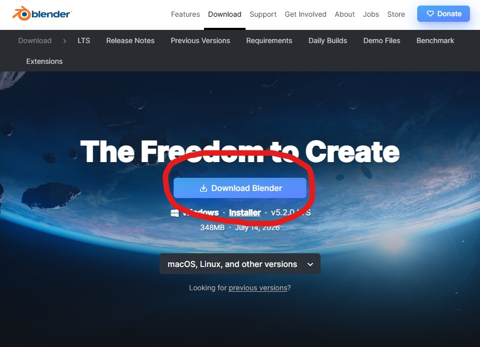
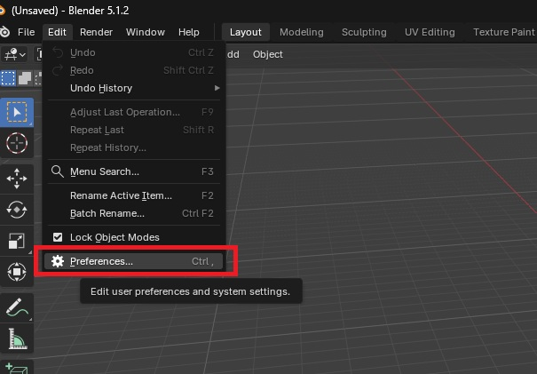
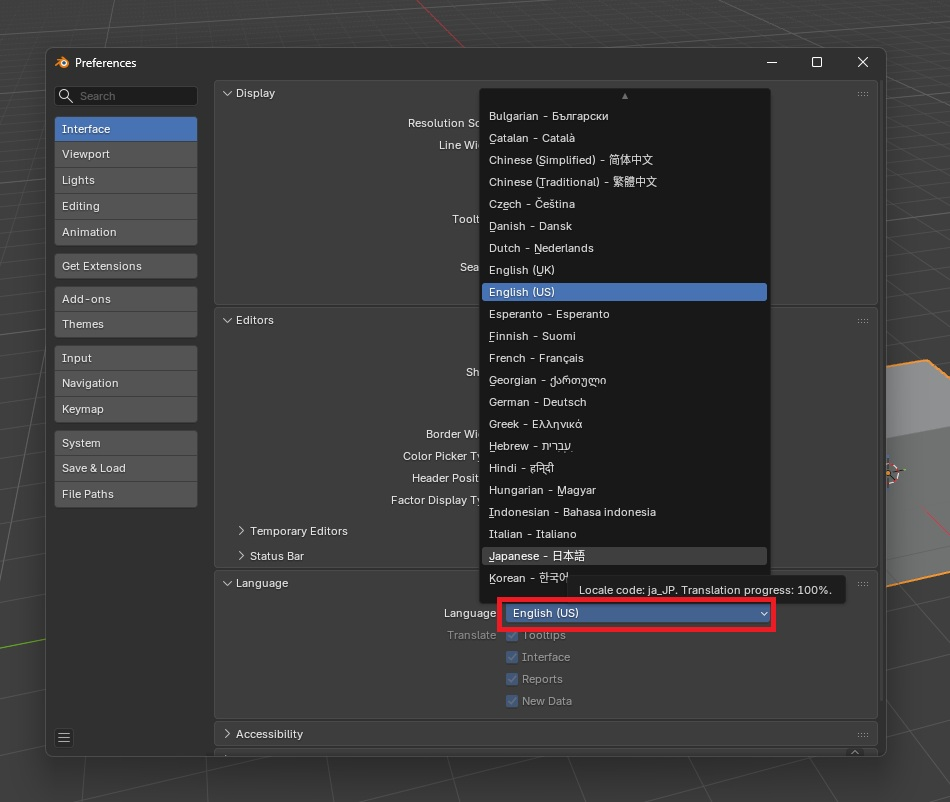
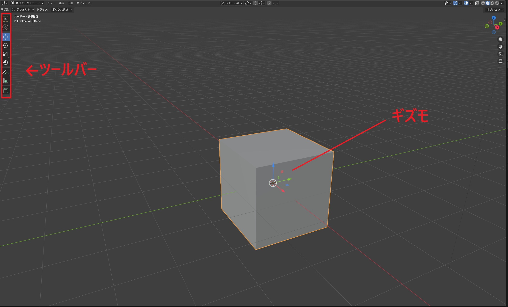
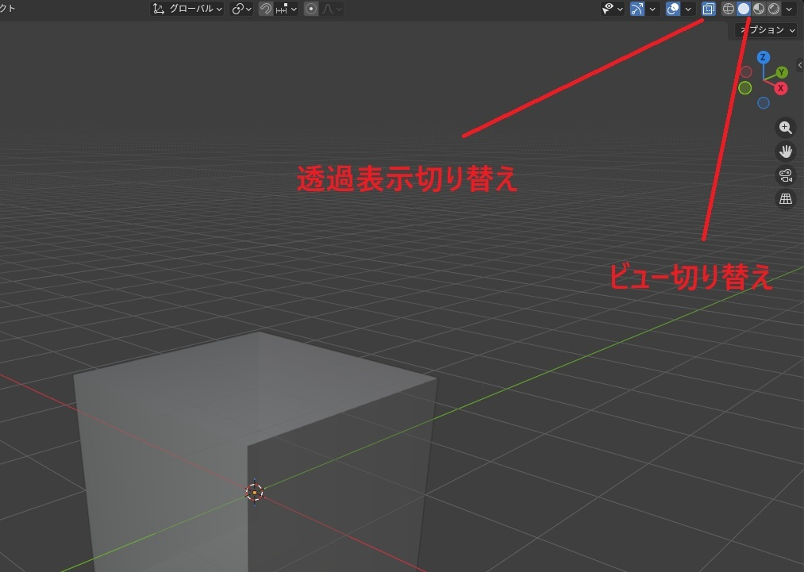
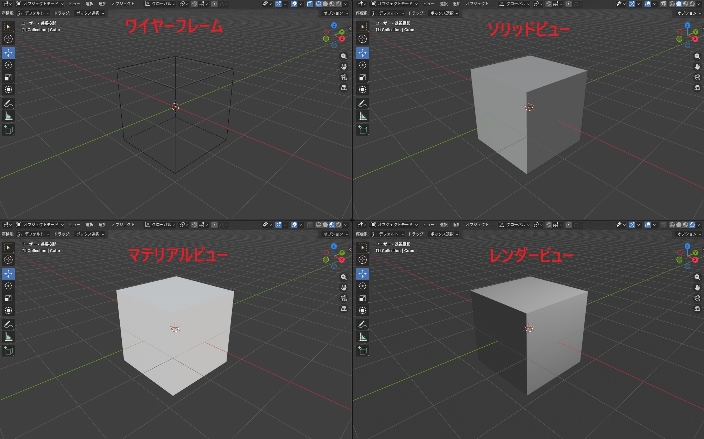
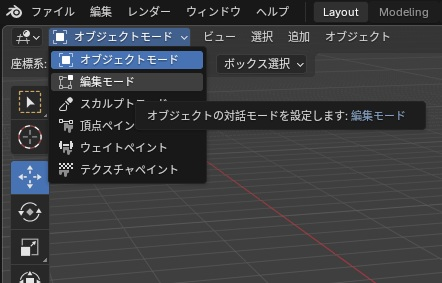
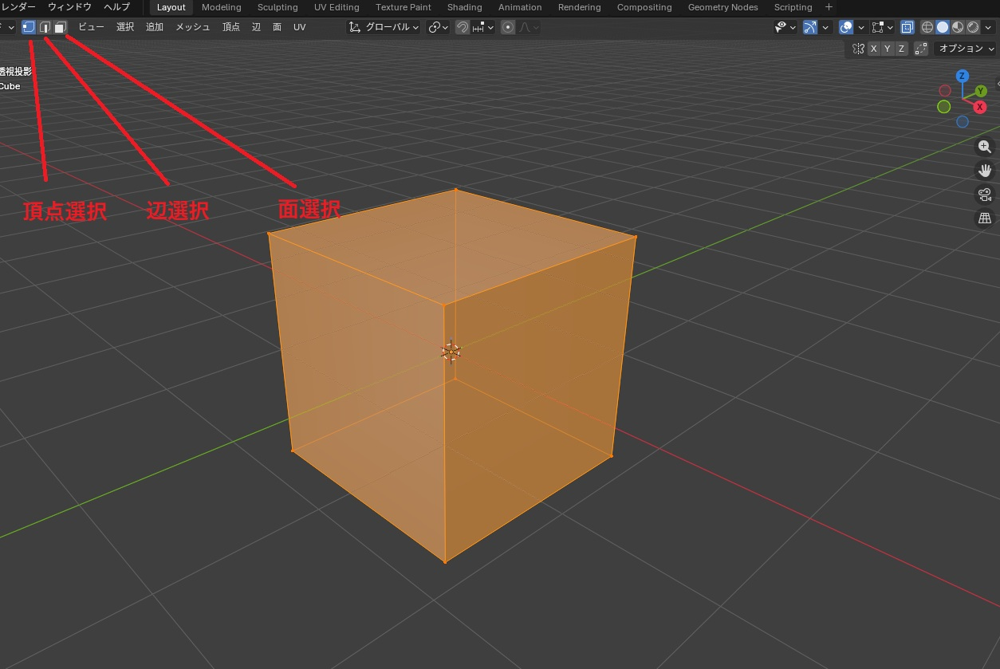
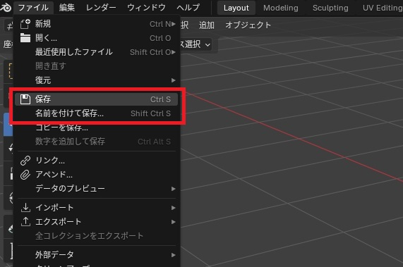

以下のサイトから「blender」をダウンロードします。
https://www.blender.org/download/

その後ダウンロードされた「blender-5.2.0(バージョン名)-windows-x64.msi」を開き、
セットアップウィザードの指示に従ってインストールを行うことでセットアップが完了します。

起動後、左上のメニューバーの「Edit」から「Prefarence」を選択します。

「Interface」のタブにある「languege」を日本語に設定します。
設定が保存されない場合は、設定画面左下の三本線をクリックし、自動保存にチェックを入れてください。

blenderでは、画面左側にあるツールバーからツールを選択することでオブジェクトを操作することができます。
ツールには移動、回転、スケールなどの種類があり、選択するとオブジェクト中央に「ギズモ」と呼ばれるコントローラーが出現します。
ギズモはドラッグすることで、
X軸(横方向)、
Y軸(奥行き方向)、
Z軸(高さ方向)を基準に動かすことができます。
また、以下のようなショートカットで操作することもできます。
移動:
G 回転:
R スケール:
S
それぞれ、Grab、Rotate、Scaleの頭文字です。
XYZで軸を固定できます。
圧倒的に早く操作できるので、慣れてきたらこちらも使っていきましょう。

右上のアイコンから「透過表示切り替え」や「ビュー切り替え」を行うことができます。

ビュー切り替えでは、線のみで表示される「ワイヤーフレーム」、形状がわかりやすい「ソリッドビュー」、
外観や質感を確認しやすい「マテリアルビュー」、レンダリング(書き出し)時の設定で表示される「レンダービュー」の4種類があります。

右上のモード選択メニュー、もしくは
Tabで編集モードに切り替えることができます。

編集モードでは、オブジェクトの頂点や辺、面といった要素を編集することができます。
左上で頂点・辺・面の選択を切り替えられます。

右上のメニューバーの「ファイル」から「保存」(上書き保存)または「名前を付けて保存」ができます。
保存は以下のショートカットでも可能です。
保存：
Ctrl+
S
名前を付けて保存：
Ctrl+
Space+
S
作業中に突然ソフトが落ちてしまうこともあるので、こまめな保存を心がけましょう。
万が一保存せずに閉じてしまった場合は、メニューバーの「ファイル」>「復元」>「自動保存」から、オートセーブされたデータを復元できます。